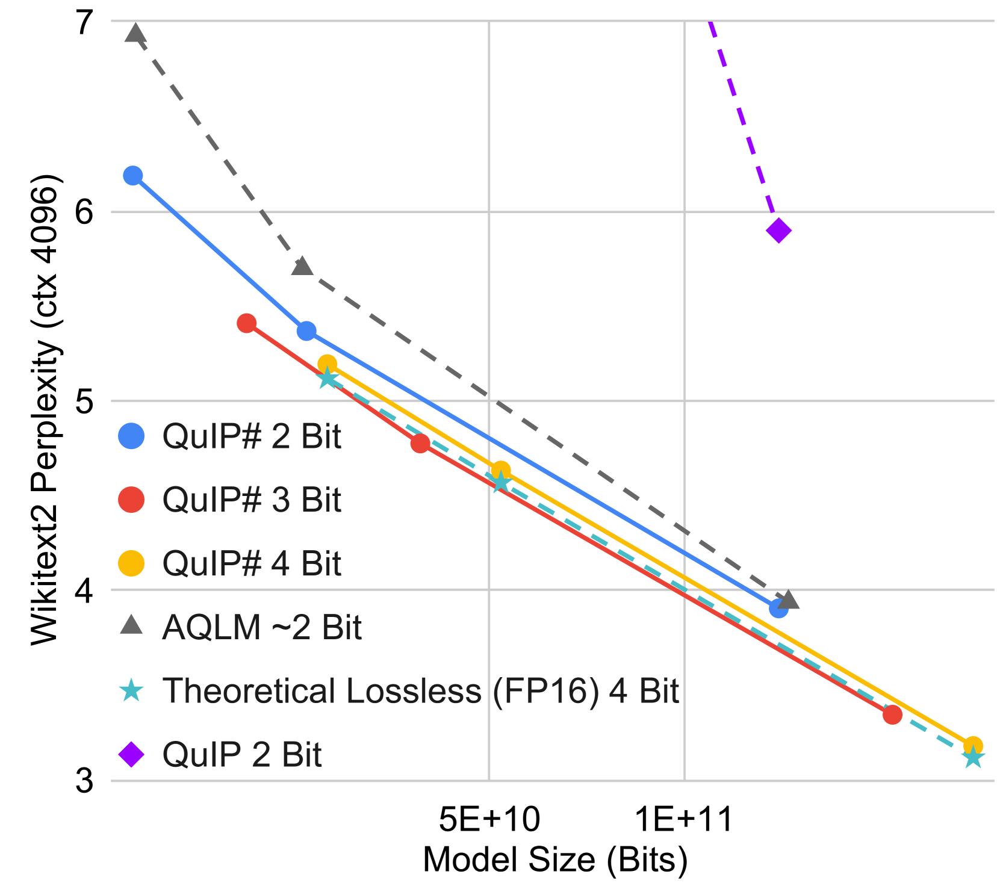
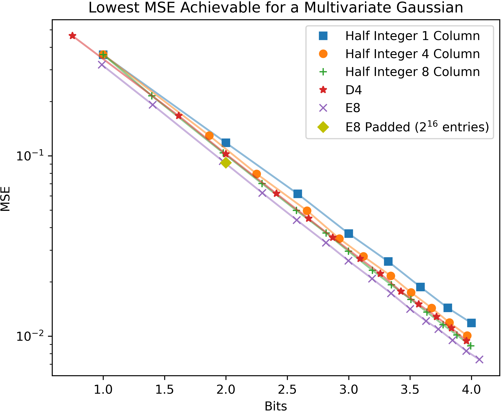
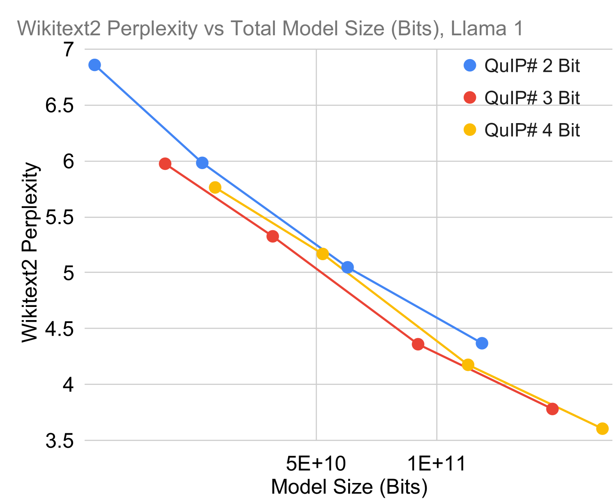

Eğitim sonrası niceleme (post-training quantization, PTQ), ağırlıkları düşük hassasiyetle niceleyerek büyük dil modellerinin (LLM) bellek ayak izini azaltır. Bu çalışmada, üç özgün teknik kullanarak aşırı sıkıştırma rejimlerinde (ağırlık başına \(\leq 4\) bit) son teknolojiyi (state-of-the-art) yakalayan, yalnızca-ağırlık (weight-only) bir PTQ yöntemi olan QuIP#'ı sunuyoruz. Birincisi, QuIP#, QuIP'in (Chee vd., 2023) eşuyumsuzluk işlemesini (incoherence processing); daha hızlı ve teorik olarak daha iyi özelliklere sahip olan rastgeleleştirilmiş Hadamard dönüşümü ile geliştirir. İkincisi, QuIP#, eşuyumsuz (incoherent) ağırlıkların sahip olduğu top biçimli alt-Gauss dağılımından yararlanmak için vektör niceleme (vector quantization) kullanır: özel olarak, optimal 8 boyutlu birim-top paketlemesini sağlayan, yüksek simetrik \(E_8\) kafesine (lattice) dayalı, donanım açısından verimli bir kod kitabı (codebook) ailesi tanıtıyoruz. Üçüncüsü, QuIP#, orijinal modele bağlılığı artırmak için ince ayar (fine-tuning) kullanır. Deneylerimiz QuIP#'ın mevcut PTQ yöntemlerinden üstün olduğunu, PTQ ölçeklemesinde daha önce görülmemiş davranışları mümkün kıldığını ve hızlı çıkarımı (inference) desteklediğini gösterir. Kodumuza github.com/Cornell-RelaxML/quip-sharp adresinden erişilebilir.

Büyük dil modelleri (LLM'ler); doğal dil işleme (Touvron vd., 2023b), bilimsel modelleme (Nguyen vd., 2023) ve program sentezi (Rozière vd., 2024) gibi çok çeşitli alanlarda hızlı ilerlemeleri sürüklemiştir. Ne var ki bu modellerin devasa boyutu, dağıtımları (deployment) önünde ciddi zorluklar çıkarır. Örneğin Llama 2 ailesinin en büyük modeli 70 milyar parametreye sahiptir ve doğal 16-bit hassasiyette 140 GB GPU belleği gerektirir (Touvron vd., 2023b). Bu muazzam bellek gereksinimi, kayıpsız LLM sıkıştırma yöntemlerine yönelik araştırmaları motive eder.
Eğitim sonrası niceleme (PTQ), eğitilmiş ağırlıkları daha az hassasiyetle saklayarak modellerin bellek ayak izini doğrusal biçimde küçültür. Örneğin Llama 2 70B, 2 bite nicelendiğinde yalnızca \(<20\) GB bellek gerektirir. Bu, yalnızca büyük modellerin daha küçük cihazlara sığmasını sağlamakla kalmaz; aynı zamanda özbağlanımlı (autoregressive) kod çözme gibi bellek-kısıtlı (memory bound) senaryolarda daha yüksek işlem hacmi de mümkün kılar. Ancak mevcut niceleme yöntemleri ya aşırı sıkıştırma oranlarına ölçeklenemez (Shao vd., 2024) ya da pahalı kod-çözme şemalarına sahiptir (Egiazarian vd., 2024) — bu da hem iyi hem hızlı PTQ yöntemleri geliştirme ihtiyacını doğurur.
Bu çalışmada, model nicelemesinde yeni bir son teknolojiye ulaşan, yalnızca-ağırlık bir PTQ yöntemi olan QuIP#'ı tanıtıyoruz. QuIP#, mevcut çalışmaları üç teknikle geliştirir: eşuyumsuzluk işleme, kafes kod kitapları ve ince ayar. Eşuyumsuzluk işleme, yaklaşık Gauss dağılımlı ağırlık matrisleri üreten, ilkesel (principled) bir aykırı değer (outlier) bastırma biçimidir (Chee vd., 2023). QuIP#, eşuyumsuzluk işlemeyi, hesaplama açısından verimli rastgeleleştirilmiş Hadamard dönüşümü (Halko vd., 2011) ile gerçekleştirir (Bölüm 3). Eşuyumsuz matrisleri nicelemek için QuIP#, en yüksek yoğunluklu 8 boyutlu birim-top paketlemesini sağlayan (Viazovska, 2017) \(E_8\) kafesine dayalı sıkıştırılabilir kod kitaplarıyla birlikte BlockLDLQ blok-uyarlamalı yuvarlama algoritmasını kullanır (Bölüm 4). \(E_8\) kafesi son derece yapısal ve simetrik olduğundan, kod kitaplarımız donanım-dostudur ve hızlı çıkarıma izin verir. Son olarak QuIP#, niceleme kalitesini daha da artıran katmanlar-arası (inter-layer) bir ince ayar algoritması içerir (Bölüm 5).
QuIP#; OmniQuant (Shao vd., 2024), QuIP (Chee vd., 2023 — önceki, ayrı bir çalışma) ve AQLM (Egiazarian vd., 2024) dahil olmak üzere mevcut PTQ yöntemlerinden belirgin biçimde üstündür. Bildiğimiz kadarıyla QuIP#, 3-bit modellerin 4-bit modellerden daha iyi ölçeklendiği ilk PTQ yöntemidir. Bu durum, Dettmers & Zettlemoyer (2023)'in 4-bit modellerin "optimal" olduğu iddiasını doğrudan çürütür ve PTQ alanı geliştikçe yakın gelecekte 2-bit modellerin 3-bit modellerden daha iyi ölçeklenmesinin muhtemel olduğunu gösterir. Dahası QuIP#, baştan itibaren hızlı olacak şekilde tasarlanmıştır. Algoritma 2, QuIP# ile nicelenmiş bir doğrusal katmanda hızlı çıkarımı betimler. QuIP#'ın "kavram kanıtı" (proof of concept) niteliğindeki CUDA uygulaması, bir NVIDIA RTX 4090'da tepe bellek bant genişliğinin %50'sinden fazlasına ulaşarak tasarım tercihlerimizi doğrular.
Özetle, son teknoloji sonuçlara şu yollarla ulaşan bir eğitim sonrası niceleme yöntemi olan QuIP#'ı sunuyoruz:
Had dik (orthogonal) Hadamard dönüşümü uygular (Böl. 3)LLM'leri sıkıştırmak, ölçekli LLM çıkarımına doğrudan fayda sağlayabildiğinden, geniş bir literatür bu konuya odaklanmıştır. Budama (pruning), niceleme-bilinçli eğitim (QAT) ve eğitim sonrası niceleme (PTQ) gibi yöntemlerin her biri problemin farklı bir yönüne odaklanır ve birbirleriyle kesinlikle dik (orthogonal) değildir. Budama, model kalitesini ve çıkarım performansını korurken modellerden ağırlık çıkarır (Chee vd., 2022; Sun vd., 2023). QAT, daha "nicelenebilir" modeller eğitmeye odaklanır ama genellikle modelleri sıfırdan eğitmeyi gerektirir (Nagel vd., 2022; Xi vd., 2023). QuIP#'ın da dahil olduğu PTQ ise önceden-eğitilmiş modelleri niceler. PTQ, QAT'ten daha az hesaplama gerektirir ve rekabetçi performans elde eder (Chee vd., 2023; Frantar vd., 2023; Shao vd., 2024; Egiazarian vd., 2024). Bu makalenin geri kalanında PTQ'ya odaklanıyoruz.
QuIP#'ta, mevcut son teknoloji PTQ yöntemlerini izleyerek ağırlıkları, Nagel vd. (2020) tarafından biçimlendirilen katman-başına vekil kayba (proxy loss) göre yuvarlarız:
\[ \ell(\hat{W}) = \mathbf{E}_x\!\left[\,\|(\hat{W}-W)x\|^2\,\right] = \operatorname{tr}\!\left((\hat{W}-W)H(\hat{W}-W)^T\right). \tag{1}\]
Burada \(W\in\mathbb{R}^{m\times n}\) doğrusal katmandaki orijinal ağırlık matrisi, \(\hat{W}\in\mathbb{R}^{m\times n}\) nicelenmiş ağırlıklar, \(x\in\mathbb{R}^{n}\) bir kalibrasyon kümesinden tekdüze rastgele çekilen bir girdi vektörü ve \(H=\mathbf{E}_x[xx^T]\) bir vekil Hessian'dır. Bu katman-içi (intra-layer) formülasyon, nicelemeyi LLM'ler için ele alınabilir kılar. \(\ell\)'yi en aza indirmenin bir yolu, ağırlık matrislerini o belirli matris için mevcut yuvarlama hatasını dikkate alarak yinelemeli biçimde yuvarlayan uyarlamalı yuvarlama (adaptive rounding) yöntemleridir. Örneğin LDLQ1 yuvarlama algoritması, model ağırlıklarının satırlarını, halihazırda yuvarlanmış satırların niceleme hatasından gelen doğrusal geri besleme (linear feedback) kullanarak yinelemeli biçimde yuvarlar. LDLQ, doğrusal geri beslemeli uyarlamalı yuvarlama yöntemleri sınıfı içinde optimaldir ve en-yakın (nearest) ya da rastgele (stochastic) yuvarlamadan kanıtlanabilir biçimde daha iyi hata oranları sunar (Chee vd., 2023).
Birden çok çalışma, model aktivasyonlarındaki ve ağırlıklarındaki aykırı değerlerin niceleme kalitesini engelleyebildiğini gözlemlemiş; bu da niceleme sırasında aykırı değerleri "bastıran" yöntemleri motive etmiştir. Örneğin AWQ (Lin vd., 2023) ağırlıkları aktivasyonlardan gelen bilgiyle ölçekler, OmniQuant (Shao vd., 2024) ise basit, öğrenilebilir ve model-koruyan dönüşümler kullanır. Ancak bu sezgisel (heuristic) temelli yaklaşımlar, daha düşük bit oranlarında başarısız olma eğilimindedir.
Bunun yerine Chee vd. (2023), QuIP'te eşuyumsuzluğun (incoherence) LLM nicelemesi için önemli olduğunu öne sürdü. Gayriresmî olarak, eşuyumsuz matrislerin girdi büyüklükleri yoğunlaşmıştır — yani aykırı değerler elenir. LLM'lerde eşuyumsuz ağırlık ve Hessian matrisleri, hem yuvarlanan şeyin (ağırlıklar) hem de önemli yuvarlama yönlerinin (Hessian'lar) herhangi bir koordinatta çok büyük olmadığı anlamına gelir. Bu da kanıtlanabilir biçimde sınırlı hatayla niceleme yapmayı mümkün kılar.
Eşuyumsuzluktan yararlanmak için Chee vd. (2023), eşuyumsuzluk işlemeyi QuIP niceleme yöntemlerinin bir parçası olarak getirdi. QuIP'in eşuyumsuzluk işlemesi, \(W\) ve \(H\)'yi yapısal rastgele dik matrislerle eşlenikleyerek (conjugation) çalışır. Özel olarak QuIP, yaklaşık \(\sqrt{n}\) boyutlu \(U_1, U_2\) ile \(\sqrt{m}\) boyutlu \(V_1, V_2\) tekdüze rastgele dik matrislerini çekip \(U=U_1\otimes U_2\) ve \(V=V_1\otimes V_2\) kurarak, bir Kronecker çarpımı yoluyla \(U\in\mathbb{R}^{m\times m}\) ve \(V\in\mathbb{R}^{n\times n}\) dik matrislerini oluşturur. \(\tilde{H}\leftarrow VHV^{T}\) ve \(\tilde{W}\leftarrow UWV^{T}\) atadığımızda, \(\tilde{H}\) ve \(\tilde{W}\) yüksek olasılıkla \(\tilde{O}(1)\)-eşuyumsuz hale gelir (bkz. onların Lemma 5'i). Bu dönüşümün vekil amacı koruduğuna dikkat edin; çünkü \(\operatorname{tr}\!\left((UWV^{T})(VHV^{T})(VW^{T}U^{T})\right) = \operatorname{tr}\!\left(WHW^{T}\right)\). Dönüştürülmüş ağırlık matrisi \(\tilde{W}\), \(\tilde{H}\) kullanılarak nicelendikten sonra, çıkarım sırasında QuIP ile nicelenmiş modeller, model aktivasyonları \(x\)'i \(V\) ve \(U^T\) ile dönüştürerek şunu hesaplar:
\[ U^{T}\!\left(\operatorname{quantized}(\tilde{W})(Vx)\right) \approx U^{T}\!\left(\tilde{W}(Vx)\right) = Wx. \]
Bir Kronecker çarpımıyla yapılan bu yapısal dik çarpımlar, \(\Theta(n\sqrt{n}+m\sqrt{m})\)'lik bir çalışma süresi ek yükü doğurur; bu da \(W\) ile yapılan çarpımın \(\Theta(mn)\)'lik maliyetine kıyasla küçüktür.
Eşuyumsuzluk işleme, aykırı değer bastırmaya yönelik daha karmaşık ve sezgisel yöntemlere ilkesel bir alternatif olarak görülebilir. Gruplama (grouping) ve aykırı değerleri FP16'da tutma gibi yöntemler, ek depolama gerektirir ve performansı olumsuz etkileyebilir. Örneğin her 64 ağırlık grubu başına 16-bitlik bir ölçek kullanmak, ağırlık başına fazladan 0,25 bit gerektirir. Bu artış, aşırı sıkıştırma rejimlerinde önemlidir; oysa eşuyumsuzluk işlemenin çıkarım ek yükü asgaridir ve daha fazla bitin gerçekten model ağırlıklarını nicelemeye harcanmasına olanak tanır. Alternatif olarak, aykırı değerleri yüksek hassasiyette tutmak, çarpması yavaş olan yapısız (unstructured) yüksek-hassasiyet matrislerini saklamayı gerektirir.
Önceki PTQ çalışmaları, her bir skaler ağırlık \(W_{ij}\)'yi tek tek nicelemeye odaklanmıştır; bu da skaler nicelemeye (scalar quantization, SQ) karşılık gelir (Chee vd., 2023; Lin vd., 2023; Shao vd., 2024). Ancak SQ, kaynak dağılımının biçimini göz ardı ettiği için alt-optimaldir. Vektör niceleme (VQ) ise \(d\) ağırlıktan oluşan bir grubu, \(d\) boyutlu tek bir vektör olarak birlikte niceler. \(k\)-bitlik VQ'da bir vektör, \(2^{kd}\times d\) boyutlu bir kod kitabı \(C\) oluşturan \(2^{kd}\) adet \(\mathbb{R}^d\) vektöründen birine nicelenir. \(C\)'yi \(W\)'nin kaynak dağılımına göre biçimlendirerek VQ, SQ'dan daha düşük bozulma (distortion) elde edebilir; daha yüksek \(d\) ise daha iyi biçimlendirmeyi mümkün kılar (Kostina & Verdú, 2011).
Ancak VQ'nun maliyeti, hem bit oranında hem de vektör boyutunda üsteldir: bir kod kitabını saklamak \(d\cdot 2^{kd}\) bit gerektirir ve bu kod kitabına bakmanın (lookup) maliyeti, en yakın komşu (nearest-neighbor) araması için tipik olarak \(O(2^{kd})\)'dir. Bu, VQ'yu yüksek boyutlarda ya da bit oranlarında çabucak ele alınamaz hale getirir ve kod kitabını verimli kılmak için yapı kullanmayı motive eder.
İnce ayar (fine-tuning), QuIP#'ın niceleme kalitesini iyileştirmek için kullandığı ikinci bir bileşendir. Niceleme-bilinçli eğitimin (QAT) aksine, ince ayar modeli sıfırdan eğitmez; küçük bir geliştirme kümesi üzerinde, halihazırda eğitilmiş bir modelin nicelenmesi sırasında uygulanan, görece ucuz bir adımdır. Bu ayrımı ve QuIP#'ın ince ayar yöntemini Bölüm 5'te ayrıntılandırıyoruz.
Bu bölümde, QuIP'in eşuyumsuzluk işlemesini, 2-çarpanlı Kronecker çarpımının yerine bir Rastgeleleştirilmiş Hadamard Dönüşümü (RHT) (Halko vd., 2011) koyarak iyileştirmeyi öneriyoruz. Bu değişiklik üç avantaj sağlar: (1) eşuyumsuzluk parametresi \(\mu\) üzerindeki teorik sınır iyileşir; (2) yapısal rastgele dik matrisle çarpmanın asimptotik maliyeti \(\Theta(n\sqrt{n})\)'den \(\Theta(n\log n)\)'e düşer; (3) bir Hadamard matris çarpımı, girdileri \(\{-1,+1\}\) içinde olduğundan hiçbir kayan-nokta çarpması olmadan yapılabildiği için çarpma maliyeti ayrıca sabit bir çarpan kadar daha azalır. Ek olarak, Bölüm 6.4'te bu değişikliğin tek başına nicelenmiş LLM'lerin perplexity'sini (şaşkınlık) iyileştirdiğini gösteriyoruz.
Bölüm 2.3'ten hatırlayalım: eşuyumsuzluk işlemeyi verimli yapmanın bir yolu, \(W\) ve \(H\)'yi yapısal rastgele dik matrislerle eşleniklemektir. QuIP#, \(x\to VSx\) işlemini gerçekleştiren RHT'yi kullanır; burada \(V\in\mathbb{R}^{n\times n}\) bir Hadamard matrisi, \(S\) bir rastgele işaret vektörü \(\{\pm1\}^{n}\) ve \(x\in\mathbb{R}^{n}\)'dir. \(n\) bir 2'nin kuvveti olduğunda, RHT Hızlı Walsh–Hadamard Dönüşümü (Fino & Algazi, 1976) ile \(O(n\log n)\) zamanda hesaplanabilir. Geçici olarak tüm boyutların 2'nin kuvveti olduğunu varsayacağız. Bölümün ilerleyen kısmında, boyut 2'nin kuvveti olmadığında eşuyumsuzluk işleme için 2 yöntem açıklayacağız.
Had Hadamard dönüşümüdür (Böl. 3)QuIP'te (Chee vd., 2023) 2-çarpanlı Kronecker yaklaşımı \(\mu_W^{Kron}=A^2\log\!\left(4Cmn/\delta\right)^2\) elde eder; burada \(A\) ve \(C\), \(n\)'den ve çarpan sayısından bağımsız küresel sabitlerdir. QuIP#'ın RHT'si, Kronecker yönteminin log-kare bağımlılığı yerine matris boyutuna log bağımlılığı sayesinde üstün eşuyumsuzluk sağlar. QuIP'in Denklem (1)'deki vekil kaybı çözümleyen tüm teorisi RHT ile de geçerli kalır; iyileştirilmiş eşuyumsuzluk oranları boyunca yayılır.
Peki ya 2'nin kuvveti olmayan \(n\) boyutları? Çoğu durumda \(n=pq\) olacak şekilde çarpanlayabiliriz; burada \(p\), bilinen bir \(q\) boyutlu Hadamard matrisinin var olduğu en büyük 2 kuvvetidir. Bu, \(H_p\) ve \(H_q\) sırasıyla \(p\) ve \(q\) boyutlu Hadamard matrisleri olmak üzere \(V\in\mathbb{R}^{n\times n}=H_p\otimes H_q\) kurmamıza olanak tanır. Ardından \(VSx\)'i \(O(q^2 p\log p)\) zamanda hesaplayabiliriz; bu da \(p\gg q\) olduğunda QuIP'in 2-çarpanlı Kronecker yaklaşımının \(O(n(p+q))\) süresinden hızlıdır. Örneğin Llama 2 70B'nin ara boyutu \(28672=1024\times 28\)'dir; \(1024\gg 28\). Algoritma 3, RHT ile eşuyumsuzluk işlemenin nasıl yapılacağını betimler. Bu, iki işaret vektörünü — \(S_U\in\{\pm1\}^{m}\) ve \(S_V\in\{\pm1\}^{n}\) — saklamayı gerektirir. LLM'ler için \(n,m\gg 1000\) olduğundan, \(S_U\) ve \(S_V\) ağırlık başına 0,01 bitten az ekler (ayrıntılar için bkz. Bölüm F.1).
Hadamard varsayımı (conjecture) \(\exists H_k\,\forall k,\,4\mid k\) der; ancak böyle Hadamard matrislerini bulmak hâlâ açık bir problemdir (Hedayat & Wallis, 1978). \(\exists H_p,H_q\) olacak şekilde bir \(n=pq\) çarpanlamasının bulunmadığı durumlar için, RHT ile benzer çalışma süresi ve yoğunlaşma (concentration) özelliklerine sahip bir Rastgeleleştirilmiş Hızlı Fourier Dönüşümü (RFFT) eşuyumsuzluk işleme algoritması sunuyoruz. Üst düzeyde RFFT, eşuyumsuzluk işlemeyi Hızlı Fourier Dönüşümü (FFT) (Cochran vd., 1967) ve rastgele bir karmaşık faz ile yapar. RFFT yalnızca \(n\)'in çift olmasını gerektirir; bu, RHT'nin \(n\) üzerindeki kısıtlarından çok daha zayıftır. RFFT, \(n=pq\) ayrışması var olduğu hâlde \(p\not\gg q\) olduğunda ve bu yüzden \(\Theta(n\sqrt{n})\)'lik bir algoritmaya kıyasla hızlanma azaldığında da yararlıdır. FFT'nin kendisi çok çeşitli donanımlarda iyi desteklendiğinden, QuIP#'ı yeni donanımlara uyarlarken hızlı bir RFFT uygulamak daha kolay olabilir. Pratikte RFFT'nin RHT'den biraz daha kötü performans gösterdiğini ama yine de güçlü sonuçlar elde ettiğini görüyoruz (Tablo 1). RFFT'yi ayrıntılı olarak Ek'teki Bölüm A.2'de açıklıyoruz.
| Eşuyumsuzluk | 2-7B | 2-13B | 2-70B |
|---|---|---|---|
| Hadamard | 8,22 | 6,06 | 4,16 |
| Fourier | 8,30 | 6,08 | 4,17 |
Merkezi limit teoreminden (central limit theorem), RHT ile dönüştürülmüş ağırlıkların kabaca top biçimli bir Gauss dağılımı izlediği sonucu çıkar. Ancak QuIP'in LDLQ ile yaptığı gibi ağırlıkları teker teker yuvarlamak, bu biçimlendirmeyi göz ardı eder; temsil edilebilir ağırlık vektörlerinden oluşan, top yerine bir hiperküp biçiminde bir küme üretir. Vektör niceleme (VQ), kod kitaplarını kaynak dağılımına daha iyi uyacak şekilde biçimlendirmemize olanak tanır. VQ kod kitapları birden çok ağırlığı tek bir kod kitabı girdisine niceler; biz de kod kitabımızın genel biçimini, RHT ile dönüştürülmüş ağırlıkların kabaca top biçimine daha iyi uyacak şekilde tasarlıyoruz. Bölüm 4.1'de, ağırlık bloklarını VQ ile uyarlamalı biçimde yuvarlayan BlockLDLQ'yu tanıtıyoruz. BlockLDLQ'nun VQ adımında QuIP#, 2 bitlik E8P kod kitabını kullanır (Bölüm 4.2). E8P, \(\mathbb{R}^8\)'de en yüksek yoğunluklu birim-top paketlemesini sağlayan (Viazovska, 2017) \(E_8\) kafesine dayanır. E8P, yalnızca \(256\times 8\)'lik bir kod kitabından bakma gerektirerek hızlı çıkarımı mümkün kılarken iyi bir biçimlendirme de sağlar.
Chee vd. (2023), doğrusal geri beslemeli bir uyarlamalı yuvarlama algoritmaları sınıfı formüle etti. Bu yöntemler, sütunları halihazırda yuvarlanmış sütunlardan gelen doğrusal geri besleme \(a_k\) ile teker teker yuvarlar. Özel olarak, bir ağırlık matrisi \(W\in\mathbb{R}^{m\times n}\)'in sütunları \(k=1,2,\dots,n\) için yinelemeli yuvarlanır: \(\hat{W}_k=\mathcal{Q}(W_k+(W_{:(k-1)}-\hat{W}_{:(k-1)})a_k)\); burada \(W_k\), \(W\)'nin \(k\). sütunu, \(W_{:(k-1)}\), \(W\)'nin ilk \(k-1\) sütunu, \(\mathcal{Q}\) en-yakın ya da rastgele yuvarlama yapar ve \(a_k\in\mathbb{R}^{k-1}\). Sonuçtaki \(\hat{W}\), \(\hat{W}=\mathcal{Q}(W+(W-\hat{W})U)\) eşitliğini sağlar; burada \(U\in\mathbb{R}^{n\times n}\), sütunları \(a_k\) olan bir üst-üçgensel matristir ve \(\mathcal{Q}\) eleman bazında etki eder.
LDLQ algoritması, \(H=L^{T}DL\), vekil Hessian \(H\)'nin LDL ayrışması olmak üzere \(U\)'yu \(L^{T}-I\) olarak ayarlar. QuIP'ten biliyoruz ki LDLQ, tamsayılara yuvarlarken doğrusal geri beslemeli uyarlamalı yuvarlama yöntemleri içinde optimaldir. Ancak LDLQ, birden çok sütunu birlikte yuvarlayan vektör nicelemeyle çalışmaz. Burada LDLQ'yu vektör nicelemeyi destekleyecek şekilde genişletiyoruz. \(n\)'i tam bölen bir blok boyutu \(g\) verildiğinde, blok LDLQ'muz özgün bir \(g\)-blok LDL ayrışmasına dayanır: \(H=\mathbf{L}^{T}\mathbf{D}\mathbf{L}\); burada \(\mathbf{L}\) birim blok-alt-üçgensel bir matristir (\(L\in\mathbb{R}^{n\times n}\)'nin \(n^2/g^2\) adet \(g\times g\) bloğu arasında, \(n/g\) köşegen bloğun hepsi \(I\) ve köşegen üstündeki tüm bloklar \(0\)'dır) ve \(\mathbf{D}\) blok-köşegen bir matristir.2 Daha önce olduğu gibi \(\mathbf{U}=\mathbf{L}^{T}-I\) ayarlar ve \(W\)'yi blok bazında şu şekilde yuvarlarız:
\[ \hat{W}_k=\mathbf{Q}\!\left(W_k+(W_{:(k-1)}-\hat{W}_{:(k-1)})\mathbf{A}_k\right), \]
burada \(\mathbf{A}_k\in\mathbb{R}^{n\times g}\), \(\mathbf{U}\)'nun \(k-g+1\)'den \(k\)'ye kadarki sütunlarını (\(k\). blok) içerir, \(W_k\) benzer şekilde \(W\)'nin \(k\). bloğunu gösterir ve \(\mathbf{Q}\) bir vektör niceleyicidir. Orijinal QuIP makalesinde olduğu gibi, bu yöntemin hatasını sınırlayabiliriz.
Aynı koşullar altında, tüm blokları yalnızca bağımsız olarak nicelemenin \(\mathbf{E}[\operatorname{tr}((\hat{W}-W)H(\hat{W}-W)^{T})]\leq gm\sigma^2\operatorname{tr}(H)\) vereceğine dikkat edin: \(H\)'nin izinden (trace), karekökünün izinin karesinin \(n\)'e bölümüne yönelik bu "iyileşme", QuIP'in skaler durumda elde ettiği çarpanla aynıdır.3
BlockLDLQ, bir \(d\) boyutlu (önceki bölümdeki \(g\)) vektörü bir kod kitabı \(C\)'ye yuvarlayan içsel bir vektör niceleme (VQ) adımı \(\mathbf{Q}\)'ya dayanır. VQ'yu etkili biçimde uygulamak için \(C\), kaynak dağılımına benzer biçimde olmalı ve yüksek paketleme yoğunluğuna sahip olmalıdır. Biçimlendirmeyi iyileştirmenin bir yolu \(d\)'yi artırmaktır. Ancak Bölüm 2.4'ten hatırlayın: bir vektör \(v\in\mathbb{R}^d\)'yi VQ ile \(k\) bite nicelemek için \(C\)'nin \(2^{kd}\times d\) boyutunda olması gerekir. Kod kitabı boyutu hem vektör boyutunda hem de bit oranında üstel olduğundan, VQ yüksek boyutlarda ya da bit oranlarında çabucak ele alınamaz hale gelir.
QuIP#'ta, \(2^{16}\) girdi içeren ancak yalnızca \(2^{8}\) girdilik bir tabloya bakma gerektiren özgün, 2-bitlik, 8 boyutlu E8P kod kitabını tanıtıyoruz; kalan \(8\) bit işaretleri (signs) ve kaydırmaları (shifts) saklamak için kullanılır. E8P yalnızca 1 KiB yer kaplar ve bu yüzden bank çakışmaları (bank conflicts) için çoğaltılmış olsa bile (\(32\times\)), herhangi bir modern GPU'nun L1 önbelleğine sığar. E8P, dayandığı \(E_8\) kafesinin yapısından ve simetrilerinden yararlanarak VQ'nun ölçekleme sorunlarını hafifletir. \(E_8\) kafesi, toplamı çift bir sayı olan, \(\mathbb{R}^8\)'deki tamamı-tamsayı ya da tamamı-yarı-tamsayı vektörlerden oluşur:
\[ \textstyle E_8 = \left(\mathbb{Z}^8 \cup \left(\mathbb{Z}^8 + \tfrac{1}{2}\right)\right) \cap \left\{x \mid \mathbf{1}^T x \text{ çifttir}\right\}. \]
E8P kod kitabının inşası, \(E_8\)'i \(\hat{D}_8\) kafesi üzerinden yazmanın eşdeğer bir yoluyla başlar; burada \(\hat{D}_8=\left\{x\in\mathbb{Z}^8+\tfrac{1}{2}\mid\mathbf{1}^T x \text{ çifttir}\right\}\), çift pariteli (parity) yarı-tamsayı vektörler kümesidir: bu durumda \(E_8=\hat{D}_8\cup(\hat{D}_8+\tfrac{1}{2})\). Buradan, \((\hat{D}_8-\tfrac{1}{4})\cup(\hat{D}_8+\tfrac{1}{4})=E_8+\tfrac{1}{4}\)'ün, \(E_8\)'in yalnızca kaydırılmış bir kopyası olduğu (ve aynı optimal paketleme yoğunluğunu koruduğu) çıkar.
\(\hat{D}_8\) güzel simetri özelliklerine sahiptir: \(\hat{D}_8\)'deki bir elemanın (sıfırdan farklı) herhangi bir çift sayıda işaretini çevirmek, \(\hat{D}_8\)'de başka bir farklı eleman verir. Bu, \(|\hat{D}_8|\) ile \(\hat{D}_8\)'deki girdilerin eleman-bazında mutlak değerleri kümesini gösterirsek, \(\hat{D}_8\)'deki her elemanın, bir \(s\in|\hat{D}_8|\) girdisinin ve uygun pariteli bir işaret vektörünün eleman-bazında çarpımı olarak (tek biçimde) ifade edilebileceği anlamına gelir. Dolayısıyla, mutlak girdilerden oluşan bir "kaynak kod kitabı" \(S\subset|\hat{D}_8|\)'den başlarsak, \(\hat{D}_8\)'in bir alt kümesini üretmek için 128 olası tek- ya da çift-pariteli işaret çevirmesini kullanabiliriz. \(S\)'deki her girdi, \(\hat{D}_8\)'deki bir girdiden tek ya da çift sayıda çevirme uzaklıktadır — ama ikisi birden değil. Böylece \(s\in S\) ve 8 işaret çevirmesinden 7'si verildiğinde, sonuncuyu 7 işaret çevirmesinin paritesinden ve \(s\)'den çıkarabiliriz. Bu, \(E_8+\tfrac{1}{4}\) içindeki 16-bitlik bir kod sözcüğünü (codeword) saklamak için şu örüntüyü kullanmamıza olanak tanır: \(S\)'deki girdi için 8 bit, işaret çevirmeleri için 7 bit ve \(\pm\tfrac{1}{4}\) için 1 bit. Bu sayede \(2^{16}\) boyutlu bir kod kitabını, yalnızca \(2^{8}\) boyutlu bir kod kitabına (\(S\)) bakıp birkaç işlem yaparak çözebiliriz. Geriye yalnızca \(S\)'yi nasıl seçeceğimiz kalır: \(S\)'yi, normu \(\leq\sqrt{10}\) olan \(|\hat{D}_8|\)'in 227 elemanı artı normu \(\sqrt{12}\) olan 29 "dolgu" (padding) elemanı olarak ayarlarız (bkz. Bölüm C.1). Bu top biçimli, \(2^{16}\) girdilik kafes kod kitabını "E8P" olarak adlandırıyoruz.

Şekil 3, standart bir çok değişkenli Gauss dağılımını çeşitli \(k\) bitlik kod kitaplarına nicelemenin eleman-bazında MSE'sini çizer. Her \(k\)-bitlik kod kitabı, \(2^{kd}\) noktaya ulaşmak için bir topla kesiştirilmiş \(d\) boyutlu bir taban kafesinden oluşur. \(E_8\) tabanlı kod kitapları, \(\mathbb{R}^4\)'te öpüşme sayısını sağlayan \(D_4\) kafesine (\(\mathbb{Z}^4\)'teki çift pariteli vektörler) dayalı olanlar da dahil, sunulan tüm diğer kod kitaplarından daha düşük MSE elde eder. Bu şekil, vektör niceleme için boyutun önemini gösterir. Vektör boyutunu artırmak, yarı-tamsayı ızgarası için hatayı azaltır; çünkü ortaya çıkan kod kitabı biçim olarak kaynak dağılımına daha yakın olur. Son olarak, kaynak dağılımı üzerinde K-ortalama (K-means) daha düşük MSE elde edecek olsa da (Lloyd, 1982), K-ortalama tabanlı bir kod kitabını daha az pratik kılan — uçtan-uca daha kötü deneysel performans dahil — bir dizi pratik neden vardır. Bunu Bölüm C.3'te daha fazla tartışıyoruz.
\(E_8\) kafesi düşük bit oranlarında (örn. 2 bit) iyi çalışır, ancak kod kitabı boyutu nedeniyle daha yüksek
bit oranlarında çabucak ele alınamaz hale gelir. QuIP#'ta, daha yüksek bit oranlarında kafes kod kitaplarının
faydalarını elde etmek için artık vektör niceleme (residual vector quantization, RVQ) (Juang & Gray, 1982)
kullanırız. RVQ, bir vektör \(x\)'i, niceleme artığını (residual) tekrar tekrar niceleyerek, \(q_i\)-bitlik kod
kitaplarından oluşan bir \(q\) kümesiyle \(p\) bite niceler (\(p=\sum_{0\leq i<|q|}q_i\) olmak üzere
\(\mbox{RVQ}(x,p,q)\) ile gösterilir). Yani \(\mbox{RVQ}(x,p,q)=\sum_{0\leq i<|q|}\delta_i\); burada
\(\delta_i=Q_{q_i}\!\left((x-\sum_{0\leq j Son çalışmalar, kayıpsız aşırı niceleme için katmanlar-arası etkileşimlerin önemli olduğunu öne sürmüştür
(Shao vd., 2024; Egiazarian vd., 2024). Burada, niceleme sırasında orijinal nicelenmemiş modeli geri kazanmaya
çalışan basit bir ince ayar algoritması kullanıyoruz. İnce ayar yöntemimiz küçük bir geliştirme kümesi üzerinde
çalışır ve 70B parametreli bir model için yaklaşık 50 GPU-saatinde gerçekleştirilebilir. Birincisi, her transformer bloğunun içinde, henüz nicelenmemiş katmanları, halihazırda nicelenmiş
katmanları telafi edecek şekilde niceleme öncesinde ince ayarlayarak blok-içi ince ayar yaparız. Bu, niceleme
sırasında tek bir doğrusal katmanın yol açtığı aktivasyon hatasını hafifletir ve transformer blokları arasında
paralelleştirilebilir. Bir transformer bloğu içinde ince ayar fikri daha önce Egiazarian vd. (2024) tarafından
önerilmişti; bizim yöntemimiz, nasıl ince ayarladığımız (niceleme öncesinde) ve ayarlanabilir parametre
kümesi bakımından farklıdır. İkincisi, modeldeki tüm doğrusal katmanlar nicelendikten sonra, kalan
nicelenmemiş parametreler, model genelindeki aktivasyon hatasını en aza indirecek şekilde ince ayarlanır.
İki adımda da işaret vektörlerini ikili (binary) vektörler yerine gerçek (real) vektörler olarak optimize
ederek, eşuyumsuzluk işleme adımının ağırlık matrisini kod kitabına göre biçimlendirmesine olanak tanırız.
Bu, işaret vektörlerini bit vektörleri yerine FP16'da saklamamız gerektiği anlamına gelse de, LLM matrislerinin
boyutu sayesinde işaret vektörleri yine de ağırlık başına 0,01 bitten az ekler. Bu adımları Bölüm D'de daha
ayrıntılı açıklıyoruz. Ana deneylerimiz, QuIP#'ın Llama 1 (Touvron vd., 2023a) ve 2 (Touvron vd., 2023b) model ailesi üzerindeki
performansını gösterir. Bu modeller 7 milyardan 70 milyar parametreye kadar değişir ve iyi performans sunarak
niceleme yöntemlerinin nasıl performans gösterdiğini ve ölçeklendiğini anlamak için uygundur. Diğer modeller
için ek sonuçlar Ek'te mevcuttur. Bölüm 6.1'de QuIP#'ı, yakın zamanda yayımlanmış yalnızca-ağırlık PTQ yöntemleriyle karşılaştırıyoruz. AWQ,
aykırı değerleri azaltmak için nicelemeden önce ağırlıkları aktivasyon büyüklüklerine göre ölçekler (Lin vd., 2023).
OmniQuant, transformer bloğu başına aykırı değerleri azaltan, model-koruyan katman-bazlı dönüşümler öğrenir
(Shao vd., 2024). AQLM, öğrenilebilir, yapısız 8B kod kitaplarıyla vektör niceleme kullanır
(Egiazarian vd., 2024).4 AQLM'in "\(1\times16\)" sayılarını raporluyoruz; bu, doğrusal katman
başına \(2^{16}\) girdili (\(\in\mathbb{R}^8\)) tek bir kod kitabı kullanmaya karşılık gelir. Bu kod kitaplarının
her biri 1 MiB yer kaplar; bu da onları herhangi bir mevcut GPU'nun L1 önbelleğine sığamayacak kadar büyük yapar
ve hızlı çıkarımı engeller (bkz. Tablo 6). Son olarak, QuIP#'taki iyileştirmeler için bir taban çizgisi (baseline)
olarak QuIP'i (Chee vd., 2023) de dahil ediyoruz. AWQ ve OmniQuant için W\(x\)A16 sayılarını OmniQuant makalesinden, AQLM sayılarını ise AQLM'den raporluyoruz.
Şu an perplexity'yi değerlendirmek için 2 yöntem olduğunu belirtelim: Llama 1'in 2048 bağlam uzunluğunu kullanmak
ya da modelin doğal bağlam uzunluğunu (örn. Llama 2 için 4096) kullanmak. OmniQuant ve AWQ, Llama 2 için 2048
kullanırken AQLM 4096 kullanır; her iki sayı kümesini de raporluyoruz. Ayrıca AQLM makalesinin, QuIP#'ın güncel
olmayan bir sürümünün sayılarını raporladığını belirtelim; buradaki sayılar en güncel QuIP# sayılarını temsil eder.
Son olarak, tablolarımızda bir sayı açıkça daha iyi olduğunda — örneğin daha küçük bir model daha büyük bir modele
eşit veya ondan üstün olduğunda ya da benzer boyutlu bir model bir diğerinden belirgin biçimde üstün olduğunda —
ilgili sayıyı koyu yazıyoruz. Tablo 2, bağlam uzunluğu 2048 ile QuIP#'ı OmniQuant, AWQ ve ince ayarsız + E8P'siz QuIP# ile karşılaştırır.
QuIP#, OmniQuant ve AWQ'ya kıyasla niceleme kalitesinde bir paradigma değişimi sunar. Dikkat çekici biçimde,
AWQ 2,15 bitte bile dağılırken (Shao vd., 2024) ve OmniQuant 2 bitte kullanılamaz modeller üretirken; QuIP#,
OmniQuant 3-bit modellerine yakın, yüksek kaliteli modeller üretir. Tablo 2 ayrıca eşuyumsuzluk işlemenin önemini
de gösterir. İnce ayar veya kafes kod kitapları olmadan bile QuIP#, niceleme sırasında model aykırı değerlerini
azaltmak için sezgisellere dayanan OmniQuant ve AWQ'dan belirgin biçimde üstündür. Tablo 4, bağlam uzunluğu 4096 ile QuIP#'ı AQLM ile karşılaştırır. 2 ve 3 bitte QuIP#, benzer boyutlu AQLM
modellerinden ya belirgin biçimde üstündür ya da daha küçük bir modelle benzer performansa ulaşır.5
4 bitte iki yöntem de benzer performans gösterir. Bu şaşırtıcı değildir; çünkü son teknoloji 4-bit modeller
FP16 performansına çok yakındır. Ayrıca bu makaledeki QuIP# 3 ve 4 bit sonuçları artık vektör niceleme (RVQ)
kullanır; daha gelişmiş çok-kod-kitaplı niceleme yaklaşımlarıyla muhtemelen daha iyi sayılara ulaşılabilir. Tablo 3, QuIP#, AQLM ve OmniQuant için sıfır-atış (zeroshot) sonuçlarını gösterir. Hem AQLM hem QuIP#,
perplexity sonuçlarıyla bağıntılı olarak OmniQuant'tan belirgin biçimde üstündür. AQLM ve QuIP#, daha yüksek
bit oranlarında ve daha büyük modeller için FP16'ya çok yakın performans gösterir; ancak QuIP#, daha düşük bit
oranlarında ve model boyutlarında AQLM'den üstün olma eğilimindedir. Sıfır-atış görevlerinin bir rastgelelik
unsuru taşıdığını ve FP16 sayılarının bile %0,5'e kadar farklı çıkabileceğini belirtelim. Şekil 1 (ilk sayfa) ve Şekil 4, QuIP#'ın Llama model ailesi ve Wikitext2 üzerinde nasıl ölçeklendiğini gösterir.
Hem Llama 1 hem 2'de, QuIP# 3 bit, QuIP# 4 bitten daha iyi performans gösterir ve QuIP# 2 bit, 3 ve 4 bitlik
modellere benzer bir ölçekleme sunar. Dahası, Llama 2'de QuIP# 3 bit, teorik olarak kayıpsız bir 4-bit modelden
(4 bitteki FP16) daha iyi performans gösterir. Bildiğimiz kadarıyla bu, bir 3-bit PTQ yönteminin teorik kayıpsız
bir 4-bit modelden üstün olduğu ilk durumdur; aynı zamanda bir 2-bit PTQ yönteminin daha yüksek bit oranlarına
benzer ölçekleme sunduğu ilk durumdur.  PTQ'nun temel faydalarından biri, belirli bir cihazda mümkün olan azami çıkarım işlem hacmini artırmaktır.
Küçük-yığınlı (small-batch) özbağlanımlı kod çözme genellikle bellek-kısıtlı olduğundan, daha küçük bir model
okunacak daha az veri gerektirir ve dolayısıyla daha hızlı sunulabilir. Ancak gerçek bir hızlanma elde etmek,
düşük kod-çözme ek yüküne sahip bir niceleme yöntemi gerektirir; aksi hâlde çıkarım, kod çözme tarafından
darboğaza girer. Örneğin deney tablolarındaki AQLM modelleri, her doğrusal katman için farklı bir \(2^{16}\times 8\)
kod kitabı kullanır. Bu kod kitaplarındaki her girdi 2 bayt yer kaplar; yani her kod kitabı 1 MiB'tir. Çıkarım
sırasında ağırlıklar bu kod kitaplarından esasen rastgele erişim örüntüsüyle okunur; bu da hızlı çıkarımı mümkün
kılmak için tüm kod kitabının L1 önbelleğine sığması gerektiği anlamına gelir (L2 önbelleği bile çok yavaştır).
Ancak 1 MiB, herhangi bir mevcut GPU'nun L1 önbelleğinden (H100'ün L1'i 256 KB'tır) büyüktür; bu yüzden AQLM
çıkarımı yüksek önbellek ıskalama (cache miss) oranlarından muzdariptir ve modern GPU'larda aslında FP16'dan
yavaştır (Tablo 6). Buna karşılık QuIP#, hızlı çıkarım etrafında tasarlanmıştır. RHT esasen \(O(n\log n)\) zamanda hesaplanabilir
ve E8P yalnızca 1 KiB gerektirir; ağırlık başına çok az (\(<5\)) komutla çözülebilir. Tablo 5, QuIP#'ın üretim
hızını, FlashAttention kütüphanesinin (Dao vd., 2022; Dao, 2023) Llama uygulamasıyla ölçülmüş şekilde gösterir.
QuIP#, RHT'de asgari çekirdek füzyonu (kernel fusion) olsa bile bir 2-bit modelle tepe bellek bant genişliğinin
%50'sinden fazlasına ulaşabilir; bu da tasarım tercihlerimizi doğrular. Bu "hızlı çıkarım tasarım tercihlerinin"
esasen niceleme sırasında yapılabileceklere getirilen kısıtlar olduğunu; dolayısıyla çıkarım hızından ödün
vererek daha da iyi niceleme kalitesine ulaşmanın tamamen mümkün olması gerektiğini belirtelim. Son olarak, farklı niceleme yöntemlerinin hız–kalite ödünleşimlerine (tradeoff) baktığımızda, QuIP#'ın PTQ
performansının yeni sınırlarını açtığını da görüyoruz. QuIP'in yayımlanmış işlem hacmi sayılarına (bir A6000'de
ölçülmüş) kıyasla, bir A6000'deki QuIP# aynı bit oranında kabaca iki kat çıkarım işlem hacmi elde eder; bu da
QuIP#'ı kesin olarak daha iyi kılar. SpQR (Dettmers vd., 2023) ve SqueezeLLM (Kim vd., 2023) gibi mevcut "hızlı
çıkarım" niceleme yöntemleriyle kıyaslandığında, yine QuIP#'ın aynı ya da daha iyi niceleme kalitesinde belirgin
biçimde yüksek işlem hacmi (\(>\%40\)) sunduğunu görüyoruz. Tablo 4 ayrıca QuIP#'ın çeşitli bileşenleri üzerine bir ablasyon (ablation) içerir. "FT'siz" satırı ince ayarsız
QuIP#'ı, "\(E_8\)'siz" satırı ise ince ayar ve kafes kod kitapları olmadan QuIP#'ı gösterir. İkincisi için,
1 boyutlu yarı-tamsayı ızgarasına yuvarlarız. AQLM tarafından raporlanan QuIP sayılarını da dahil ediyoruz.
Tüm bit oranlarında, QuIP#'ın her bileşeni ek performans kazanımı sağlar. QuIP ile, ince ayar ve kafes kod
kitapları olmadan QuIP# arasındaki fark, aynı zamanda QuIP'in Kronecker çarpanlaması ile QuIP#'ın RHT'si
arasındaki farkı da gösterir. RHT, Kronecker çarpanlamasından daha güçlü eşuyumsuzluk özellikleri sunar
(Bölüm 3); bu da performansı iyileştirir. QuIP#'ı sunduk: ağırlık başına 2, 3 ve 4 bitte LLM'lerde son teknoloji sonuçlar elde eden, yalnızca-ağırlık
bir eğitim sonrası sıkıştırma yöntemi. QuIP#, verimli ve ilkesel bir aykırı değer bastırma biçimi olarak
Rastgeleleştirilmiş Hadamard Dönüşümü'nü kullanır ve RHT ile dönüştürülmüş ağırlıkları daha iyi nicelemek için
\(E_8\) kafesi tabanlı E8P kod kitabını getirir. E8P kod kitabı son derece simetriktir ve hızlı çıkarıma izin
verir; bu da bir "kavram kanıtı" QuIP# CUDA uygulamasının modern GPU'larda tepe bellek bant genişliğinin %50'sinden
fazlasına ulaşmasını sağlar. QuIP# ayrıca katmanlar-arası ince ayar uygular ve nicelemeyi daha da iyileştirir.
Bildiğimiz kadarıyla QuIP#, 3 bitte 4 bitten üstün ölçekleme ve 2 bitte daha yüksek bit oranlarına benzer
ölçekleme elde eden ilk PTQ yöntemidir. Sonuçlarımız, yakın gelecekte 2-bit modellerin 3-bit modellerden daha
iyi ölçeklenmesinin muhtemel olduğunu gösteriyor. Bu makale, amacı Makine Öğrenmesi alanını ilerletmek olan bir çalışmayı sunar. Çalışmamızın birçok olası
toplumsal sonucu vardır; bunların hiçbirini burada özellikle vurgulamamız gerektiğini düşünmüyoruz. Belirli bir sıra gözetmeksizin şu kişilere teşekkür ederiz: QuIP# CUDA uygulamasına yardımı için David Hou'ya;
RTX 4090'ını ödünç verdiği ve QuIP# zamanlama sayılarının elde edilmesine yardımcı olduğu için Tiancheng Yuan'a;
Hadamard dönüşümünün hızlı bir CUDA uygulaması ve QuIP# konusundaki genel yardımı için Tri Dao'ya; ve hesaplama
kaynakları için Together AI'ya.5Niceleme Sırasında İnce Ayar
6Deneyler
6.1Llama Modellerinde QuIP#
Yöntem Bit Wikitext 2 C4 1-7 1-13 1-30 1-65 2-7 2-13 2-70
1-7 1-13 1-30 1-65 2-7 2-13 2-70 FP16 16 5,68 5,09 4,10 3,53 5,47 4,88 3,32 7,08 6,61 5,98 5,62 6,97 6,47 5,52 AWQ 4 6,08 5,34 4,39 3,76 6,15 5,12 - 7,52 6,86 6,17 5,77 7,68 6,74 - OmniQ 4 5,86 5,21 4,25 3,71 5,74 5,02 3,47 7,34 6,76 6,11 5,73 7,35 6,65 5,65 QuIP# (FT'siz, \(E_8\)'siz) 4 5,83 5,20 4,23 3,63 5,66 5,00 3,42 7,25 6,70 6,06 5,68 7,17 6,59 5,59 QuIP# 4 5,76 5,17 4,18 3,60 5,56 4,95 3,38 7,18 6,67 6,03 5,66 7,07 6,54 5,56 AWQ 3 11,9 7,45 10,0 5,21 24,0 10,5 - 13,3 9,13 12,7 7,11 23,9 13,1 - OmniQ 3 6,49 5,68 4,74 4,04 6,58 5,58 3,92 8,19 7,32 6,57 6,07 8,65 7,44 6,06 QuIP# (FT'siz, \(E_8\)'siz) 3 6,29 5,52 4,54 3,91 6,19 5,34 3,71 7,82 6,98 6,29 5,86 7,85 6,98 5,78 QuIP# 3 5,98 5,31 4,36 3,78 5,79 5,10 3,56 7,39 6,83 6,17 5,77 7,32 6,72 5,67 OmniQ 2 15,5 13,2 8,71 7,58 37,4 17,2 7,81 24,9 18,3 13,9 10,8 90,6 26,8 12,3 QuIP# (FT'siz, \(E_8\)'siz) 2 9,95 7,18 5,80 5,02 12,3 7,60 4,87 11,7 8,67 7,55 6,83 14,8 9,57 6,82 QuIP# 2 6,86 5,97 5,02 4,36 6,66 5,74 4,16 8,36 7,48 6,71 6,19 8,35 7,45 6,12
Yöntem 2-70 2-13 2-7 Bit ArcC ArcE PiQA Wino
Bit ArcC ArcE PiQA Wino
Bit ArcC ArcE PiQA Wino FP16 16 51,1 77,7 81,1 77,0 16 45,6 73,3 73,5 69,6 16 40,0 69,3 78,5 67,3 OmniQ 4 49,8 77,9 80,7 75,8 4 43,1 70,2 78,4 67,8 4 37,9 67,8 77,1 67,0 QuIP 4 47,0 74,3 80,3 76,0 4 44,9 73,3 79,0 69,7 4 - - - - AQLM 4,07 51,0 78,1 81,4 76,9 3,94 43,9 72,2 78,6 70,4 4,04 40,3 68,9 77,7 67,3 QuIP# 4 50,6 78,1 81,4 77,1 4 45,5 73,9 78,9 69,9 4 40,5 69,1 78,4 67,6 OmniQ 3 47,6 75,7 79,7 73,5 3 42,0 69,0 77,7 65,9 3 35,3 62,6 73,6 63,6 QuIP 3 46,3 73,2 80,0 74,6 3 41,5 70,4 76,9 69,9 3 - - - - AQLM 3,01 50,0 77,6 81,3 77,2 3,03 43,6 73,5 77,8 67,6 3,04 38,7 67,8 76,6 68,4 QuIP# 3 50,9 77,7 81,4 76,4 3 44,0 72,5 78,4 69,1 3 39,2 68,4 77,3 66,5 OmniQ 2 28,7 55,4 68,8 53,2 2 23,0 44,4 62,6 52,6 2 21,6 35,2 57,5 51,5 QuIP 2 34,0 62,2 74,8 67,5 2 23,5 45,2 62,0 52,8 2 19,4 26,0 54,6 51,8 AQLM 2,07 47,9 77,7 80,4 75,9 1,97 38,5 67,0 75,1 69,5 2,02 33,6 62,8 73,5 64,6 QuIP# 2 48,7 77,3 80,3 75,9 2 39,5 69,3 77,3 67,7 2 34,6 64,6 75,1 64,9
Yöntem 2-7 2-13 2-70 Bit W2 C4 Bit W2 C4 Bit W2 C4 FP16 16 5,12 6,63 16 4,57 6,05 16 3,12 4,97 QuIP# 4 5,19 6,75 4 4,63 6,13 4 3,18 5,02 — FT'siz 4 5,22 6,79 4 4,65 6,15 4 3,18 5,02 — \(E_8\)'siz 4 5,29 6,86 4 4,68 6,20 4 3,22 5,05 QuIP 4 - - 4 4,76 6,29 4 3,58 5,38 AQLM 4,04 5,21 6,74 3,94 4,64 6,14 4,07 3,17 5,01 QuIP# 3 5,41 7,04 3 4,78 6,35 3 3,35 5,15 — FT'siz 3 5,60 7,34 3 4,90 6,50 3 3,41 5,20 — \(E_8\)'siz 3 5,77 7,61 3 4,99 6,65 3 3,48 5,28 QuIP 3 - - 3 5,12 6,79 3 3,87 5,67 AQLM 3,04 5,46 7,10 3,03 4,83 6,37 3,01 3,36 5,17 QuIP# 2 6,19 8,16 2 5,35 7,20 2 3,91 5,71 — FT'siz 2 8,22 11,0 2 6,06 8,07 2 4,16 6,01 — \(E_8\)'siz 2 11,2 14,5 2 7,04 9,37 2 4,58 6,51 QuIP 2 - - 2 13,5 16,2 2 5,90 8,17 AQLM 2,02 6,93 8,84 1,97 5,70 7,59 2,07 3,94 5,72 6.2QuIP# Bit Ölçeklemesi
6.3QuIP# ile Verimli Çıkarım
Model 2 Bit 4 Bit tok/s % Bellek BW tok/s % Bellek BW 2-7B 170,50 %29,60 117,73 %40,87 2-13B 104,83 %33,80 71,09 %45,84 1-30B 51,60 %38,39 32,50 %48,36 2-70B 32,74 %56,84 OOM OOM
Yöntem 2-7B 2-70B FP16 33,1 tok/s OOM AQLM 2 Bit 20,6 8,27 QuIP# 2 Bit 106,3 25,9 6.4Ablasyon Çalışmaları
7Sonuç
★Etki Bildirimi
♦Teşekkürler
§Kaynakça